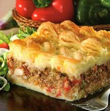

Pastel de papa
Home

Pastel de papa como el de la abuela, con carne picada y sin las pasas de uva que hacen que sea una poronga
A continuación, la receta en unos simples pasos
Ingredientes:
- Papas (1kg)
- Manteca (150g)
- Leche
- Carne picada (500g)
- 1 morron
- 1 cebolla
- Ajo
- 3 huevos
Pasos:
- Lavarse las manos, no sea cosa que se caiga algún pendejo
- Hervir por 8 minutos los 3 huevos y reservar
- Picar el morrón, el ajo y la cebolla y rehogar junto con la carne picada por 15 minutos
- Mientras tanto, pelar el kg de papas, cortarlas en cubos medianos y hervirlos. Cuando estén blandos, pasarlos a un bowl y pisarlos bien hasta que no queden grumos
- Una vez que el pure este bien pisado, agregar la manteca y seguir pisando. Luego, agregar la leche e integrar. Salar a gusto
- Buscar una bandeja algo profunda y hacer un piso de pure no muy grueso. Sobre el, volcar el relleno y los huevos. Finalmente, tapar con otra capa de pure
- Llevar al horno por aproximadamente 30 minutos
- Servir con ensalada y proceder a engordar como un chancho que no desciende